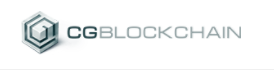
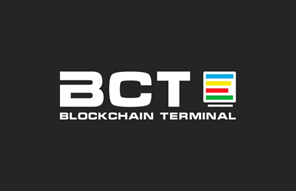
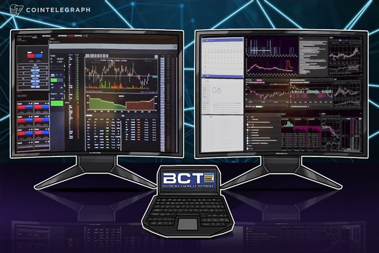

-
Strategic partnership between Tradingene and BCTerminal

Tradingene hails signing with BCT, ‘The Bloomberg for Crypto’
Tradingene, the first marketplace providing tested algorithms with investors on a blockchain-based auction platform, has established a strategic collaboration with The Blockchain Terminal (BCT Inc.), a groundbreaking platform for trading cryptocurrencies (through third party applications).
The Blockchain Terminal is being developed to provide hedge funds and other institutional investors with a one-stop shop for third party crypto-trading tools, information, data, and content, offering a consolidated view of the crypto market that promises to bridge the gap between traditional investment and the emerging crypto space. Tradingene is an ideal addition to this system designed for speed, efficiency and for maximizing trading power-by incorporating Tradingene into the Blockchain Terminal, traders will have access to a broad range of algorithms on a success fee basis.
“Tradingene is delighted to have signed with BCT,” enthused Daniel Wolfe, CEO of Tradingene. “BCT is a new and exciting platform which we see as the ‘Bloomberg for Crypto.’
Tradingene was built to enable the creation and use of algorithms to trade in cryptocurrencies and other popular financial instruments, making algorithmic trading accessible, transparent and equitable.
“We are excited about the partnership with Tradingene, as it opens the opportunity for BCT customers to begin accessing a wider range of algorithms and trading tools,” said Oz Sultan, of Blockchain Terminal technology. “We look forward to users and traders being able to leverage Tradingene as a new standard for taking advantage of the profits available from trading algorithms in the crypto space.”
Tradingene users can create algorithms, and attract capital to their algorithms, on a success-fee basis. The blockchain protects creators’ intellectual property, ensures a transparent bidding process and allows Tradingene to fix the profit from each algorithm. It also enables users to buy trading ‘robots’ with one click. In addition, Tradingene’s intuitive portfolio management tools help investors create a portfolio that fits their risk-return preferences.
“Signing with BCT brings a host of benefits to us, not least their access to hedge funds who are natural buyers of our algorithms.”
BCT’s technology is already being tested, and they have a transparent and robust platform that meets the high demands of the industry. It’s a fantastic development for us,” added Wolfe.
BCT Inc.’s public token sale began on April 1 and is currently in progress. Tradingene launches its ICO on 16 May 2018.
About the Blockchain Terminal: The Blockchain Terminal is an institutional quality wealth management tool with an open ecosystem that will enable third party blockchain developers to distribute crypto trading tools, information, and content to the traditional finance industry. It bridges the gap between traditional investment and the emerging crypto space. The platform includes a robust order routing system to enable trading across multiple exchanges through third party applications to ensure best execution. A key component of the platform is ComplianceGuard, a proprietary compliance application that will help pave the way for hedge funds and other high-profile institutions to trade in crypto. Users will need the ERC-20-compliant BCT Token to operate the Terminal, including accessing registering, transacting, and utilizing applications. BCT Inc’s public token sale began on April 1 and is continuing.
About CG Blockchain: Since its launch in 2016, New York-based CG Blockchain has been dedicated to developing enhanced trust and accountability products for the financial sector using blockchain technology.
About Tradingene: Tradingene is the first marketplace that connects vetted algorithms with investors. The company provides a blockchain-based auction platform for the creation and use of algorithms to trade in cryptocurrency and the most popular financial instruments, making algorithmic trading accessible, transparent and equitable.
Algorithm creators can create algorithms on Tradingene’s robust platform and attract capital to their algorithms on a fair, success-fee basis. The blockchain protects creators’ intellectual property, ensures a transparent bidding process and allows Tradingene to fix the profit from each algorithm.
Tradingene is offering high-quality trading algorithms as a new global investment product. The blockchain allows users to buy trading ‘robots’ with one click. And Tradingene’s robust AI allows both creators and the platform to back test each algorithm.
Added to this, the intuitive portfolio management tools help investors create a portfolio that fits their risk-return preferences.
A summary of How-It-Works:
- 1. A creator develops and backtests their trading algorithm on the Tradingene platform.
- 2. Tradingene checks the algorithm and puts it up for auction, providing information about risks, expected returns, and other relevant factors to investors.
- 3. During the algorithm auction, investors indicate how much money they are willing to connect and the success fee they are willing to pay. The auction provides a transparent mechanism for creators and investors to agree the success fee for an algorithm.
- 4. Upon completion of each auction, a smart contract is concluded between the platform and winning investors. Investors make a small deposit into the smart contract.
- 5. Trading takes place on each investor’s exchange or brokerage account. Tradingene does not have access to the funds or even to information about the investor’s balances and positions.
- 6. The platform and developer earn money only if the investor earns money.
- Daniel Araya Podcast on "Cryptocurrency & Blockchain - Episode 22
-
Blockchain Trading Terminal Seeks to Improve Hedge Fund Crypto Compliance and Trading Performance

Blockchain Trading Terminal Seeks to Improve Hedge Fund Crypto Compliance and Trading Performance
Cryptocurrency exchanges need liquidity and hedge funds rely on volatility, so these risk-takers should be enjoying the current roller coaster ride in cryptocurrency prices. Instead, hedge funds have been retrenching from the crypto markets in 2018. The markets are accustomed to hedge funds going out of business, but the 10 hedge funds that closed at the beginning of 2018 came as a surprise to many, but not to the astute investor.
Financial regulators, not surprisingly, are strengthening their oversight of the over 200 crypto hedge funds that are still in business. So many of these funds lack preparation for a drop of 25 percent or more in the market, indicating weak risk management practices. Even those who keep trading profits in the black are likely to face increased compliance risk eroding gains owing to a lack of institutional-grade crypto trading systems. Hedge funds currently spend up to 10 percent of their operating budgets on compliance issues and face rising insurance costs.
The hedge fund sector as a whole, however, has not shied away from cryptocurrencies. One noteworthy newcomer is Soros Fund Management, led by legendary hedge fund manager George Soros. A short-selling hedge fund would have done well in the first quarter of the year whereas the losers in 2018 appear to have been pure risk-takers who expected crypto prices to continue their 2017 upwards trajectory. Recall that George Soros is known as the man who broke the British bank after he shorted the British pound in 1992 and made one billion dollars. No matter the speculative asset, the hedge fund manager has claimed to never put more than 30 percent of his capital at risk.
Real-Time Crypto Trading Compliance
The new hedge fund entrants to the cryptocurrency markets are a sign that opportunity still abounds for astute traders and risk managers. More importantly, new institutional-grade trading technology is being developed for cryptocurrency markets. The Blockchain Terminal (BCT), for instance, could have helped the defunct hedge funds monitor cryptocurrency compliance and trading risks in real time. The BCT creates a complete compliance loop by connecting regulators, hedge funds, and their compliance departments through transparent, encrypted trading records with embedded audit functionality. The advanced trading tools and services provided by the terminal, meanwhile, allow institutional traders to improve trading and risk management performance.
Designed for the converging crypto and traditional currency trading worlds, BCT could help hedge funds lower their rising compliance costs. Regulators have been pushing often opaque hedge fund trading activity into the spotlight with tightening trade reporting requirements. On the transparent Blockchain, transactions are executed by smart contracts, which link each transaction to the one before it, creating an immutable and trackable trading record. As mentioned, institutional-grade compliance and auditing functions are embedded in the system.
Real-Time Crypto Trading Compliance
The Blockchain Terminal provides a full suite of cryptocurrency trading tools and services over the secure digital ledger, including an institutional-grade order system, data, analytics, compliance monitoring and back-office functions. USB ports make it easy to plug in a hardware wallet.
A full view of trading activity can be provided across over 60 crypto exchanges and thousands of currencies alongside data, news, and social media streams. On this hybrid Blockchain, a private Blockchain maintains all private account and trade information while timestamped transactions are executed on a public Blockchain. The open source code allows third-party developers to develop trading algorithms and tools, which could be either proprietary or public. If institutional investors who spend billions of dollars a year on proprietary software development embrace the improved economics and efficiencies of the shared economy model, the BCT could become the Metatrader of the institutional crypto world.
One of the risks defunct hedge funds faced in the young cryptocurrency markets was the slow execution times when trading across the many disparate exchanges. Currently, tracking trade performance such as the aggregate value of open trade positions or unrealized gains is slow and inefficient across the various platforms. Engineered for professional trading, the robust Blockchain Terminal provides a consolidated order book to provide real-time buying and selling data on crypto and fiat assets across many exchanges and currencies. Trading speed, as in the forex markets, will be a key competitive advantage in cryptocurrency and converged crypto-fiat trading.
The Blockchain Terminal is currently being tested by several dozen hedge funds with several billion dollars in assets under management. Hedge funds struggling to adapt trading systems for cryptocurrencies can be up and running with the Blockchain Terminal and gain a complete picture of the crypto market. The initial coin offering is live and running until April 30, 2018.
Join the token sale at tokensale.bct.io and visit the website: bct.io for more information.
-
BCTerminal now listed on @WorldCoinIndex

The Blockchain Terminal (“BCT”) delivers a powerful set of tools and services to the wealth management industry, making use of blockchain technology to deliver cutting edge applications that have been created by a diverse community of developers, while also enabling real-time compliance enforcement and ad hoc audits. The BCT platform provides a robust layer of security and functionality to familiar tools, and capabilities that advance the current strategies of traditional investment managers, and also supports the complexities of cryptocurrency markets. Emerging cryptocurrency- focused investment funds enjoy sophisticated platform tools for both front and back office operations along with the added value and assurance of a compliance framework that provides security for investors across this rapidly emerging asset class.
The central distinguishing feature of BCT is a hybrid ledger that integrates both a private and a public, permissioned blockchain to enable its core services. This hybrid ledger is anchored to the broader Ethereum blockchain, which can be freely used and addressed by BCT applications, a set of modular productivity tools and services that are supported by the Blockchain Terminal Foundation. Developers on this platform have easy access to production-tested infrastructure, with embedded compliance and broader distribution enabled by BCT’s comprehensive business strategy. The BCT is a high-availability network device that securely journals compliance entries for a hedge fund’s Chief Compliance Officer, and is also a desktop terminal for use by hedge fund traders, analysts, portfolio managers, and operations staff. All installed hardware devices on a firm’s network are configured to a private ledger that improves the overall integrity of critical data through consensus. This journaled data interacts with the global BCT permissioned ledger to provide an external anchor for internal activity that can be observed and verified by external constituents, including auditors and regulators without compromising confidentiality. The supporting BCT token facilitates the functions of this platform and enhances the convenience of the BCT as a showcase mechanism for a new generation of best-of-breed applications for the industry.
-
Terminals For Exchanging Crypto Put To The Test By Institutional Industry Leaders
Terminals For Exchanging Crypto Put To The Test By Institutional Industry Leaders
A company which has created a terminal for exchanging cryptocurrencies, as well as state-of-the-art compliance technology, has started to roll out early versions of its hardware to industry leaders worldwide.
Blockchain Terminal says several alpha terminals are already in use – and right now, 200 beta machines are being built in New York.
Its hardware brings together market data from more than 60 exchanges, as well as details of upcoming ICOs, to give investors access to hundreds of cryptocurrencies in a “secure and monitored environment.”
The company’s ex-president Bob Bonomo, who formerly served as a chief information officer at two of America’s biggest asset management firms, told Cointelegraph: “We’re not a white paper, we’re a real product, here and now.
“We are trying to bring stability, accountability and transparency to this new and exciting ecosystem and digital currency community.”
Helping institutional investors embrace crypto
According to Blockchain Terminal, rising cryptocurrency prices have left the vast majority of the hedge fund industry behind – with many institutions unable to buy, trade and invest because they have been equipped with tools that are not suitable for analyzing these assets and completing transactions. To add insult to injury, existing systems for trading crypto lacked the compliance capabilities that the sector so desperately needed.
The company says a bridge between crypto markets and institutional investors is achieved through ComplianceGuard – an application it has created to surpass the stringent standards imposed by hedge funds. According to Blockchain Terminal, this technology provides the necessary safeguards, alerts and auditing capabilities that investors need to “confidently participate in cryptocurrency purchases.”
A consolidated wallet means one account can be used for trades on dozens of exchanges. Blockchain Terminal’s ecosystem is equipped with an open-source app store so software can be built which fulfills the needs of different investors – and the company says this marketplace is fueled by a thriving community of developers who are working on new programs all the time. A utility token known as BCT has been created, and this will be used for completing all of the functions that the terminal provides.
Blockchain Terminal says it is launching at a time when hedge funds are suffering a crisis of confidence – with high fees and weak levels of performance seeing an estimated $112 bln pulled from the industry.
Last autumn, a survey conducted by BarclayHedge revealed that one in four hedge funds are either already investing in crypto or want to begin doing so over the next six months – a snapshot of the growing momentum these assets are experiencing.
New terminal enhancements planned
As the first Blockchain terminals are put to the test, the company is already thinking ahead and mapping out new features for the future. Initially, the machines will be equipped with USB ports to ensure they are compatible with hardware wallets – and over time, the interface will be made available on mobile and tablet devices so institutional investors are just a tap away from the latest data.
Blockchain Terminal’s initial coin offering is scheduled to end on 30 April, with the company claiming that earlier phases of its crowdsale – including a private presale – were immensely successful.
Looking ahead to the future, the company hopes to launch a retail-friendly of its terminal by the autumn – further accelerating the adoption of its machines. Soon afterwards, the platform’s potential uses would be further buoyed by the integration of third-party applications.
In recent weeks, Blockchain Terminal’s team have been attending crypto conferences in North America, Europe, Asia and the Middle East.
- ICO101 Joel Emery Podcast about the potential of Blockchain Terminal for hedge funds and institutional finance
-
Blockchain Terminal to Offer Compliance in Cryptocurrency For Hedge Funds

Blockchain Terminal to Offer Compliance in Cryptocurrency For Hedge Funds
A platform has developed a terminal to help institutional investors and hedge funds buy and trade cryptocurrency with ease, all the while delivering transparency and compliance through state-of-the-art technology.
Blockchain Terminal is led by a Wall Street veteran who has served as a chief information officer at two of America’s biggest asset management firms. Known as BCT for short, the desktop system combines the resources that analysts, portfolio managers, traders and chief compliance officers need to capitalize on investment opportunities.
The terminals boast large monitors that provide instant access to critical information, and they’re furnished with USB ports so hardware wallets can be accessed. Mobile and tablet versions of the interface are expected to follow, meaning real-time data can be accessed on the move.
This comes as interest in cryptocurrency among hedge funds continues to grow at a steady pace. A recent study by BarclayHedge found 25 percent of managers are already investing in cryptocurrency or intend to begin doing so in the coming six months. Meanwhile, a further eight percent are exploring the possibility.
Meanwhile, research from AutonomousNext suggests there was an explosion in the number of crypto funds in 2017. Currently, it is estimated up to $5 bln worth of crypto assets are being managed across more than 225 funds.
Compliance as a cornerstone
In its white paper, BCT says that the 2008 financial crisis and headline-grabbing cases of fraud, when coupled with the high fees that investors are paying for diminishing returns, have transformed attitudes when it comes to transparency, accountability and compliance.
The cornerstone of its platform is ComplianceGuard technology. Pre-installed on every terminal, BCT says it is “designed to exceed the most robust hedge fund industry compliance requirements.” The system has been tested through pilot installations at 20 hedge funds.
BCT’s ledger utilizes two Blockchains simultaneously. The first, which is local and private, allows a hedge fund’s sensitive information to remain confidential. Meanwhile, all transactions are time-stamped and aggregated on the global Blockchain, meaning audits can be conducted on an ad hoc basis remotely and immediately whenever compliance problems emerge. Any accompanying documents and notes are also preserved in such a way that they cannot be tampered with.
There’s an app for that
BCT says it has a “living, breathing community” of developers who have created an array of third-party applications for use on terminals helping to speed up the adoption of its technology across the industry. Exchange integrations will allow the BCT to display data on “the vast majority of approximately 1,400 cryptocurrencies, all in a compliance-vetted environment.”
To ensure that security requirements are satisfied and quality is consistent, all apps will be approved by BCT before they are released to the community as a whole. Based in the Cayman Islands, BCT will be advancing the terminal to its full potential.
Everything is brought together by the BCT Token – and two types “co-exist” within the ecosystem. As well as the native BCT Token, which is used to power the ledger, an ERC20-compliant token allows users to subscribe to applications and access services.
The rollout begins
BCT is hoping that 200 Blockchain terminals will be delivered to hedge funds and other financial institutions by April 2018. The BCT public pre-sale is ongoing, following a successful private presale and airdrop, the company said.
By the third quarter of 2018, BCT is aiming to launch a retail version of its terminal that will fuel the adoption of its technology. And, in the following quarter, it plans to integrate third-party apps into its ecosystem – “increasing the possibilities of the platform.”
Its team members are traveling the world, attending crypto and fintech events to help spread the word. With stops in Germany, South Korea, Israel and Malaysia already completed, BCT representatives are now planning to attend conferences in New York and California come April.
-
Blockchain Terminal @BCTerminal is Using ComplianceGuard Technology to Disrupt the Hedge Fund Industry
Blockchain Terminal is to Disrupt the Hedge Fund Industry
BY ALEXANDRA SAYAPINA ON FRIDAY, MARCH 23RD, 2018 9:25AM UTC
Given the high demand for alternative asset classes powered by crypto, a new Blockchain-based project has entered the market to disrupt a conventional system once ruled by terminals such as Bloomberg and Thomson Reuters.
The main drawback with hedge funds is that they can’t handle cryptocurrency trading. The tools they use are limited and cannot ensure full transactional transparency and security. There are high management fees, which compel many investors to look for alternatives
Blockchain Terminal Breaks through to the Hedge Fund Industry
Crypto-powered Institutional Grade Platform – Blockchain Terminal (BCT), brings all the essential tools hedge funds and wealth management companies need to trade cryptocurrency on a secured, single-interfaced platform. Designed to go beyond the strictest compliance requirements pertaining to the hedge fund industry, BCT’s end goal is to provide applications that ensure crypto trading is done securely and transparently.
As cryptocurrency investment funds increase in popularity, terminals like Bloomberg must adapt to market demands or be left behind. Most wealth management companies are aware of their limitations, and know that they can’t compete with the highly secure front-end and back-end operations that an upscale crypto investment platform provides. The solution is to embrace the perks offered by Blockchain technology in order to preserve their clientele.
Blockchain: Secure and Transparent Hedge Fund Investing
By connecting aspiring crypto investors and hedge funds, BCT aims to bring premiere features to the forefront. The platform will combine relevant data from cryptocurrency exchanges, news articles, blogs, and social media; as well as vital information on emerging ICOs. The hardware behind BCT will therefore paint a clean picture of how the crypto market functions in real time.
At the heart of the Blockchain Terminal lies ComplianceGuard, the platform’s technology. Featuring a powerful, fully-stable compliance framework, the end goal is to assist hedge fund compliance professionals in complying with applicable regulatory requirements. 20 hedge funds are already using ComplianceGuard as part of the Terminal’s pilot installation program.
Features that Set the Blockchain Terminal Apart
Three core features ensure the uniqueness of BCT. The first is exchange integration, which uses Compliance Guard to convey relevant data on 1,400 cryptocurrencies in a compliance vetted environment.
The second is identity verification, which provides users with role-based identities to establish trust and craft a transactional accountability layer.
The third feature is the app ecosystem; an open-source application store for third-party developers. They can contribute to the platform by creating tools for cryptocurrency and traditional assets on par with current compliance requirements.
The Tokens Behind the Terminal
Two co-existing tokens fuel the Blockchain Terminal ecosystem. The native BCT token powers the ledger, whereas the second token, which is ERC20-compliant and built on Ethereum, becomes available through the token sale and is meant to act as a subscription and entitlement token for all services offered by the native BCT.
Together, the goal is to make sure all activities happening on the platforms are performed safely and securely. BCT’s public pre-sale is live until March 31st, 2018 offering 280M BCT tokens with 1 ETH = 10,000 BCT, and minimum purchase making 40 ETH. Following the pre-sale, the public sale is to commence on April 1 and continue till April 15th, 2018. Main event’s contributors will see 90M BCT tokens for 7,500 BCT = 1 ETH.
-
How Blockchain Cuts Costs for Financial Institutions
How Blockchain Cuts Costs for Financial Institutions
Four years before Bitcoin launched, the late Dr. Stephen Hawking wrote the handbook on how financial institutions should handle the challenges posed by cryptocurrencies.
“Intelligence is the ability to adapt to change,” he said. Okay, it was not a handbook, and clearly, Hawking was not talking about cryptocurrencies. However, it was terrific advice, nonetheless. When Blockchain launched, its intent was to break up the monopoly of the financial establishment. Today, companies within that same financial establishment are investing billions in researching blockchain’s potential and develop new blockchain-based systems and applications. While there’s a little fear and skepticism, there’s a lot more excitement and adaptation.
Some of the financial establishment’s skepticism is well-founded. Blockchain is certainly spawning some questionable new businesses, as well as a host of offerings with incredible potential. But they also know the technology offers them a lot of the solutions they need. Arguably their greatest immediate need is the ability to trade cryptocurrencies, and generally participate in the cross-border, open-source money movement, in a safe and compliant way. A BarclayHedge survey of hedge fund managers in September 2017 revealed that 24% of hedge funds either currently invest in cryptocurrency or plan to invest within the next six months. However, many hedge funds lack the IT infrastructure for trading cryptocurrencies.
But beyond the exchanges, blockchain technology has the potential to streamline transactions, improve compliance, reduce risk, decentralize tasks — and dramatically cut costs. In fact, some of the estimated savings quoted in reports are truly staggering. Santander estimates that blockchain-based apps could potentially cut costs by up to $20 billion a year by 2022. Meanwhile, an Accenture & McLagan report concludes that blockchain technology could slash costs by 70% on central finance reporting; 50% on business and central operations; 50% on compliance; and more than 30% across the middle and back offices.
There are many different tasks for which blockchain technology could lower costs. It could dramatically reduce the maintenance and replacement costs associated with aging IT infrastructure. Additionally, it could simplify and speed up the transfer of payments, particularly across international borders. It could improve the accuracy of trades and shorten the duration of the conciliation and settlement processes. Also, it could execute smart contracts securely, eliminating unnecessary legal transactions. It could simplify online identity management. Plus it could streamline verification and fraud analysis. Of course, it could aid regulatory compliance.
“Investment banks spend an estimated two-thirds of their IT budgets on legacy back-office infrastructure,” said David Treat, managing director of Accenture Financial Services and blockchain lead, in the Accenture & McLagan report. “Blockchain could lead banks to decommission much of that infrastructure and externalize key operational processes. It could completely change the cost dynamics in these organizations.”
So what’s holding back the institutions? For a start, replacing entire legacy systems at the enterprise level would be a massive project and the high cost would likely be prohibitive, particularly since most organizations run on mainframe systems. The notion of decentralizing trust would represent a major step, requiring the creation of vast and secure networks. Given that blockchain is still an emerging technology, there are obvious concerns around performance, scalability, security and the lack of regulation.
Some have suggested that blockchain technology might actually lead to more expensive transactions, given the number of network nodes required to complete the process. Meanwhile, other potential “hidden” costs include the high energy requirements of the network and the cost of lifetime data storage. In fact, a recent Forbes article criticized the Accenture estimates for failing to take into account these “exploding future costs.”
Nevertheless, most institutions are at the very least experimenting with ways to harness blockchain. More than 40 global banks are actively studying the technology via the R3 Distributed Ledger Group consortium. And although a few large global banks are funneling resources towards patenting their own blockchain-based systems, most of those that do run a blockchain system partnered with a FinTech company.
This month, our company, BCT, is excited to launch a cost-effective blockchain solution for hedge funds and other financial institutions, called The Blockchain Terminal.
The Terminal is a one-stop desktop interface that integrates all the tools and information needed to trade cryptocurrencies, with great security and compliance. Comprising two 38-inch curved screens, BCT offers an information feed, aggregating news, and data from cryptocurrency exchanges and 1,400 crypto currencies, plus ICO info and updates from 40,000 media outlets. It also provides advanced trading data analytics and charting tools for all strategies, and it offers an open app store for institutions.
Importantly, the Blockchain Terminal comes with proven, gold-standard compliance monitoring and audit trail technology, ComplianceGuard, that fulfills even the strictest hedge fund requirements. Powered exclusively by BCT utility tokens, the Terminal is currently being piloted at 20 hedge funds and will launch officially by the end of Q1.
There’s little doubt that blockchain technology holds the potential to transform the way financial institutions operate, beyond the crypto exchanges, resulting in significant potential cost-savings across numerous different departments and functions. As companies become increasingly comfortable with the new technology, the use of blockchain-based apps among the institutions is likely to continue to grow.
-
How Blockchain (and BCT) Can Close the Compliance Gap
How Blockchain (and BCT) Can Close the Compliance Gap

In a TEDx talk last year, self-professed “Blockchain Futurist and Patron Saint of Trusted Commerce,” Richie Etwaru, declared that blockchain technology will become the fourth great “gap-closing” invention of the modern age. The sequence goes like this: the printing press closed the knowledge gap, the combustion engine closed the power gap, while the internet continues to close the distance gap. Blockchain, Etwaru declared, will close the trust gap. I would argue that if you are an organization in one of the more heavily regulated industries — like finance and healthcare — you might be equally interested in whether it can close the compliance gap.
The complex and fast-evolving regulatory landscape has been the leading source of executives’ complaints and money-sapping headaches within those industries for decades, especially in the financial services arena. Institutions must constantly keep pace with a myriad of reporting requirements that require them to know their customers (KYC) more deeply than almost anyone in any other industry, and ensure that their actions do not facilitate money laundering (AMC) or any other form of fraud.
Few doubt that, on the face of it, blockchain technology has the potential to revolutionize the transaction process and aid the compliance efforts of financial services providers. The notion of accessing an immutable, distributed ledger featuring crypto technology for the identification, verification and traceability of transactions, is a mouthwatering prospect. The thought that we can move beyond trying to anticipate the future thoughts of a single, centralized regulatory authority is, in and of itself, appealing to many.
The blockchain vision is for financial institutions to share an integrated system that not only handles the KYC and AML processes but offers audit access to third-party regulators. In those respects alone, it sounds like the regtech equivalent of the moon on a stick. But, of course, the cryptocurrency world is a volatile and risky place to play, and for hedge funds and other institutions, there are plenty of hurdles to blockchain adoption, mainly centered around technology, compliance and cost.
For starters, an enterprise-wide deployment of blockchain technology — as in, replacing every legacy transaction system — would represent a seismic and prohibitively costly operation for most organizations. Also, even those solutions that are designed to integrate with existing systems are distinctly lacking in compliance tools.
It is not that the industry ever made a collective decision to avoid the blockchain party. On the contrary, institutions are experiencing a high demand for digital currencies, and there is every reason to believe that there are billions sitting on the hedge-fund sidelines because of compliance risks. Most of these organizations currently lack the trading infrastructure to play in the crypto space. Which begs the question: Where are the startups and the solutions? Why isn’t anyone solving the crypto compliance puzzle?
Actually, that is exactly what our company, BCT, is trying to do.
This month we roll out our Blockchain Terminal, a one-stop crypto interface, integrating all the tools and information that institutions need to purchase cryptocurrencies. The hardware comprises two stacked 38-inch curved screens, but it is what’s inside that we believe offers the greatest hope for a secure, compliant gateway into cryptocurrency trading.
BCT is a professional-grade information feed, aggregating news, and data from the top cryptocurrency exchanges and 1,400 crypto currencies, along with ICO information and updates from 40,000 media outlets. Second, it provides advanced trading data analytics and charting tools for all trading strategies. Third, it comprises an open app store for institutions along with apps for front, middle and back office. Fourth, and most critical, it comes with top-notch compliance monitoring and audit trail foundation — the missing pieces.
At the heart of the offering is the proven ComplianceGuard technology, a deep-compliance framework that satisfies even the strictest hedge fund requirements, and already boasts 88,000 users throughout the industry. Powered exclusively by BCT utility tokens, the Blockchain Terminal is currently being piloted at 20 hedge funds and will launch officially by the end of Q1.
The core idea is to give hedge funds and other institutional investors an option for high-compliance trading of cryptocurrencies. If companies jump on board, the product could spark a significant shift in regulatory dynamics. Not only will institutions enjoy cost savings from sharing the burden of fulfilling the KYC and AML commitments, but with a regulatory body able to view all transactions in a network, the onus will shift to the financial institution to take a more active role in identifying fraud analysis of transactions in real time. And providing the regulators are ready, this could go some way to close that compliance gap.
-
The Blockchain Terminal: A Bridge that Connects Hedge Funds to Crypto Assets and Blockchain Technology
The Blockchain Terminal: A Bridge that Connects Hedge Funds to Crypto Assets and Blockchain Technology

The hedge fund industry is a $3 trillion market. However, it has been a wild ride for many hedge funds in the last couple of years. In 2016, a whopping $112B was pulled from the hedge fund industry, striking fear in the hearts of most managers.
A report from Preqin at the end of August 2017 showed that a good part of the challenge was due to a negative perception of the industry as a result of weak performance in recent years coupled with high fees.
As a result, you can bet that hedge fund managers watched closely as the crypto-boom of 2017 reverberated around the world.
Despite being famed for their willingness to take risks, most hedge funds have been forced to watch the upward climb of cryptocurrency prices with their hands tied due to investment mandates and security issues.
All of that is quickly changing, however, as new ways for hedge funds to get involved are emerging. In fact, a BarclayHedge survey of hedge fund managers from late September 2017 revealed that 24% of hedge funds interviewed “responded that they either currently invest or plan to invest [in cryptocurrencies] within the next six months.”
A big part of the reason for the industry’s slowness to embrace cryptocurrencies is that the industry is accustomed to performing analyses on investments with tools that cannot be applied to the crypto asset class.
In other words, the hedge fund industry — which spends $2.3 billion a year on technology — requires institutional-grade information technology tools specifically designed for the crypto space before hedge funds will enter the crypto space.
The solution to this conundrum is the Blockchain Terminal: a platform for best of breed data, analytics and execution solutions that will give hedge funds and other institutional investors the tools they need to enter the world of cryptocurrencies.
The goal of the Blockchain Terminal is to facilitate real-world trust relationships between financial asset managers, auditors, and regulators. The gas for the system will be an Ethereum ERC20 token, the BCT token, that will be used to purchase apps and pay transaction fees within the ecosystem.
The Blockchain Terminal will thus enable the hedge fund industry’s entrance into cryptocurrency asset class investing.
Join us on Telegram for a lively conversation with the Blockchain Terminal team and our advisors.
-
Three Ways for Developers to Connect Apps to the Blockchain Terminal
Three Ways for Developers to Connect Apps to the Blockchain Terminal

The Blockchain Terminal is creating a standardized storefront for developers and third-party vendors to distribute crypto trading applications to hedge funds and other institutional investors. It will, therefore, provide hedge fund users with institutional-grade data and execution for cryptocurrency trading, and a best of breed collection of applications.
How do we know that the hedge fund community wants our technology? Before we saw the proof from the long wait times we witness at events where we show off our terminal, we saw a number of industry trends that pointed us in that direction.
Hedge Funds Are Big on Technology
Technology solutions are currently disrupting the financial services sector at a fast pace, and the hedge fund industry has been a big part of that. The hedge fund industry spends $2.3 billion a year on technology. That number has risen steadily in recent years and is expected to rise at even greater rates.
In summarizing their findings on hedge fund technology spending in 2017, EY reported that “What is most apparent is that those who do not innovate and evolve will be left behind.” In a similar study released by KPMG in 2016, the authors summarized their findings by saying “What is clear is that fund managers expect to increase their investments into innovation going forward.” That is especially impressive given that one-in-five North American hedge funds have spent over $5M on technology each year during the past 5 years.
Gone are the days when hedge fund managers were able to move on a hunch or a bet. The rise of powerful new analytic and back-end tools has brought technology into the heart of investment decisions.
However, are they really interested in cryptocurrencies?
Evidence that Hedge Funds Are Eager for Crypto
A number of studies have shown that hedge funds have quietly begun investing into cryptocurrencies. A BarclayHedge survey of 119 hedge fund managers in September 2017 revealed that 24% of managers “responded that they either currently invest or plan to invest [in cryptocurrencies] within the next six months.”
Another study of investments into cryptocurrencies by 120 fund advisors confirmed that investors have had positive returns on their cryptocurrency investments. The author of one study reports that “The findings are consistent with anecdotal evidence suggesting that the returns attainable through crypto investments have no short-term match in legacy systems.”
The conclusion of the above studies is clear: hedge funds are interested in cryptocurrencies, and they know they can win in the space.
What’s needed is to provide them with the institutional grade tools they require in order to truly dig into the space.
The Opportunity for Developers
So how can developers take advantage of the opportunity the Blockchain Terminal has created? To open the doors as wide as possible to blockchain developers, we have created three classes of applications that we partner with.
1. Contained Applications
Blockchain Terminal Contained Applications are to be executed in the runtime scope of Blockchain Terminal hardware and its local resources. In contrast, Blockchain Terminal Metered Applications are designed for hosting independent of Blockchain Terminal hardware, while still registered for use with local APIs. In many ways, Contained Applications will live on their own but rely on Blockchain Terminal infrastructure for integration and other leveraged platform components: logging, persistence, and identity management.
2. Metered Applications
Blockchain Terminal Metered Applications are applications that can be listed for subscription and use within the Blockchain Terminal but will not be executed in the runtime scope of the Blockchain Terminal hardware and its local resource.
While the runtime of Metered Applications is to be hosted elsewhere in the enterprise, Metered Application registration, billing, and support will continue to be managed from the Blockchain Terminal after installation.
3. Linked Applications
Blockchain Terminal Linked Applications are to be displayed within the Blockchain Terminal Applications Store, but they will not be integrated. These applications may be registered with the Blockchain Terminal for product placement.
When users select a Linked Application, they will be brought to a non-integrated application in a different online location. These applications will be curated applications that are promoted to Blockchain Terminal users.
Conclusion
Each application available in the Blockchain Terminal will be the best of breed. We are committed to building out a robust developer program for third-party developers and vendors. Qualified developers can contact Gabriel Ortiz (go@cgblockchain.com) to get involved.
Join us on Telegram for a lively conversation with the Blockchain Terminal team and our advisors.
-
Top 10 Crypto Investing Tools and BlockChain Terminal ICO Review
-
Miko Matsumura presents BCT at Developer Week SF!
-
"Blockchain Terminal is a company addressing this need (compliance/regulation) with their new terminal which could act as an essential tool for all serious investors."
BRINGING CRYPTO TRADING TOOLS TO MAINSTREAM USERS
The crypto industry has gotten used to a lot of hype and endorsement from the mainstream media recently, so it is easy to think that the ecosystem is mature enough for widespread adoption. But when you look at the nuts and bolts of trading and transaction, it is clear that the crypto industry still has a long way to go.
For example, trading crypto is more inconvenient than regular stock trading by orders of magnitude. Between irritating Know Your Customer (KYC) and Anti-Money Laundering (AML) requirements, inconvenient trading platforms, and poor customer service support, trading crypto is much more basic than conventional investors would be used to. With mass reports of institutional investors from Goldman Sachs to George Soros getting involved in crypto trading, there is clearly a gap to be bridged between the way we trade and the way we should be trading.
One way that the trading experience for conventional investors is so much better than crypto is the technology they use. Trading terminals like that of Bloomberg allow for rapid deep analysis and transactions to be made. In crypto, where compliance/regulation concerns are very relevant, there is no comparable level of assistance provided by these terminals (which include notifications and guidelines pertaining to how to trade within regulations). This is missing from the crypto industry, and traders are losing out as a result. However, Blockchain Terminal is a company addressing this need with their new terminal which could act as an essential tool for all serious investors.
THE CRYPTO TRADER’S BATTLESTATION
As the team behind the Blockchain Terminal (BCT) said, their solution:
bridges the gap between institutional investors and the unfamiliar cryptocurrency market. By combining market data from top cryptocurrency exchanges, information about upcoming ICO’s, as well as news from publications and social media, our hardware creates a complete picture of the crypto world.
ComplianceGuard is the component of the solution that is designed to help the user navigate the complex nature of regulation in trading: “The foundation of the Blockchain Terminal, it provides a deep compliance framework which satisfies the strictest hedge fund requirements.”
Perhaps most interestingly, BCT helps users work with exchanges that can be very time to consume in many cases. Cryptocurrency exchange integrations utilize ComplianceGuard technology to display information on the vast majority of approximately 1,400 cryptocurrencies, all in a compliance-vetted environment.
The team hopes that this array of benefits will be of interest to both experienced crypto traders dissatisfied with the clunky nature of current trade and to traders who are new to crypto and want to keep using the kind of effective solutions they are accustomed to.
A COMPLETE ECOSYSTEM
The amount of trades and transactions done in such a terminal requires thorough accounting and data management, which is why a token is necessary to underpin the system in order to provide oversight. For this reason, the BCT team is releasing a token which should also help spread the word about their platform. The BCT token sale is live and will run until April 30 with no minimum buy-in at tokensale.bct.io.
-
The BCT terminal brings crypto to Wall Street
The BCT terminal brings crypto to Wall Street
The last revolution in front end trading technology – essentially the tools traders use to interact with the markets – came when Bloomberg released their primitive but surprisingly resilient terminals. Now that new systems are hitting the Street, new tools are necessary to help traders make better decisions. That’s why BCT made their interesting new Terminal.
The tool is essentially a double-screened PC with a great deal of proprietary software installed. It looks at multiple exchanges at once and lets you read news, prices, and market changes in one easy-to-understand package. I sat down with the BCT team to look at their product more closely and despite some early marketing hiccups the team seems to have a cool – if complex – product for those more familiar with the Bourse than Binance.
-
Blockchain Terminal to feature @GeminiDotCom platform
Blockchain Terminal to feature Gemini platform
May 16, 2018
Blockchain Terminal, a crypto trading and information ecosystem, will feature Gemini, a cryptocurrency exchange, on its platform. Users will have priority access to the Gemini exchange through a private cross-connection.
Blockchain Terminal offers third party crypto-trading tools, information, content and data from more than 80 exchanges in order to give traders a better view of the cryptocurrency market, according to a press release. The platform is currently in beta testing with hedge funds. A wider launch is slated for the third quarter of 2018.
Gemini is the fifth fully executable exchange on Blockchain Terminal.
"Institutional investors are looking for greater regulation and opportunity within the crypto space," said Jeremy Weiss, CEO for BCT Inc. in the Asia-Pacific region. "Gemini is one of the most highly regulated crypto exchanges in the world and offers one of the largest liquidity pools available for execution on our platform. We are delighted to work with Gemini to help bring our users the value, choice and security they need."
-
LaJoie Partners with BCT, The Blockchain Terminal to Honor Throwback Tribute to Father Randy LaJoie at Darlington Raceway
LaJoie Partners with BCT, The Blockchain Terminal to Honor Throwback Tribute to Father Randy LaJoie at Darlington Raceway
After a Monster Energy NASCAR Cup Series (MENCS) off-week, Corey LaJoie and the No. 72 team return to competition this weekend at Darlington Raceway. LaJoie brings with him BCT, The Blockchain Terminal as the primary sponsor of the No. 72.
New to the NASCAR scene, BCT, The Blockchain Terminal is an institutional grade platform for analyzing and trading cryptocurrency, currently giving users access to over 160 crypto exchanges. Providing a service that bridges the gap between institutional investors and the cryptocurrency market, BCT combines market data from top cryptocurrency exchanges, information about upcoming ICO's, as well as news from publications, and social media, our hardware creates a complete picture of the crypto world. The entire Blockchain Terminal ecosystem runs on a utility token. Transactions and functions within the terminal are made exclusively with the BCT Token. The token will be used to register, transact, and utilize applications, all within the platform.
As part of the Darlington Throwback initiative, the No. 72 will feature a paint scheme of personal significance to LaJoie. Paying tribute to his father, Randy LaJoie, two-time XFINITY Series Champion (1996, 1997), the No. 72 will mimic the red, white and blue infamous FINA paint scheme.
Having one previous MENCS starts at the 1.366-mile, oval, LaJoie has completed a total of 360 laps at the track famed as "Too Tough to Tame". He and the No. 72 team are prepped and ready to take on the challenges of "The Lady in Black" at Darlington Raceway.
TriStar PR
-
TradeRiser Partners with Blockchain Terminal To Provide its Artificial Intelligent Capabilities within the Terminal
TradeRiser Partners with Blockchain Terminal To Provide its Artificial Intelligent Capabilities within the Terminal
TradeRiser is a decentralized ecosystem and Research Assistant platform for investors and traders, that is set to capture a sizable portion of the trading industry worth trillions. Today it has announced a collaboration with CG Blockchain, Inc. (BCT, PL_BlockchainTerminal), a New York based company developing powerful sets of blockchain-based tools and services for the financial services industry.
Integration
BCT is creating a standardized storefront for developers and third-party vendors to distribute crypto trading applications to hedge funds and other institutional investors. Under the proposed collaboration, TradeRiser’s Research Assistant technology will be available under the BCT’s Blockchain Terminal storefront. This move will further TradeRiser’s client reach and also accelerate user growth on the Blockchain Terminal. TradeRiser’s goal is to nurture an ecosystem featuring financial analysts, hedge funds, exchanges and many more participants.
TradeRiser is an AI based Research Assistant to shorten investment research cycles from days to minutes, a challenge faced by many financial institutions and sophisticated retail traders. With the help of training from the ecosystem the Research Assistant will be able to answer a million distinct types of natural language questions about the impact of events and general statistics on cryptocurrencies and other asset prices.
“Partnering with BCT Terminal is a very good strategic move for both parties. We believe our clients will be the overall winners, having access to the best in technology within cryptocurrency trading space. My team and I look forward to the integration work and will be making further announcement upon completion of the work” says Dennis Owusu-Ansah, CEO of TradeRiser.
About TradeRiser
TradeRiser is a decentralized ecosystem and Research Assistant for answering trading questions.The platform is powered by AI and data from an ecosystem of financial analysts, enabling the AI to answer trading questions instantly. The Research Assistant platform will serve both investors and traders across the world covering crypto and financial markets. The TradeRiser blockchain infrastructure will allow organizations to create machine learning tasks for workers and reviewers across the world to take up. For more information visit https://www.traderiser.com
About BCT Terminal
Blockchain Terminal bridges the gap between institutional investors and the unfamiliar cryptocurrency market. By combining market data from top cryptocurrency exchanges, information about upcoming ICO’s, as well as news from publications, and social media, their hardware creates a complete picture of the crypto world. They have built a proprietary ComplianceGuard technology ensures that institutional investors can confidently participate in this emerging market. To learn more visit https://www.bct.io/
-
BCT Inc Announces APAC Distribution of the Blockchain Terminal with Dios, and Blockchain Technologies SPC, Singapore
BCT Inc Announces APAC Distribution of the Blockchain Terminal with Dios, and Blockchain Technologies SPC, Singapore
SINGAPORE, June 08, 2018 (GLOBE NEWSWIRE) -- BCT Inc today announced the placement of its first Blockchain Terminal, a powerful crypto-trading platform to enable hedge-and crypto-funds to enhance trading profits and mitigate risk with built-in compliance tools and apps, in the APAC region at Dios Asset Management, a fund run by Mr. Alvin Teo, CEO and Founder.
“I’m excited to be the first fund to take possession of BCT’s Terminal in the APAC region,” said Teo. “I expect that it will provide Dios with a strong competitive advantage. I am looking for ways to enhance the returns on my fund’s performance, and crypto is a way to do that. I will need institutional-grade tools and execution to do this and BCT will give me the data, analytics and insights to perform the right trades with confidence.”
Between June 2017 and 2018, cryptocurrencies Bitcoin and Ethereum have increased in value by 262% and 231% respectively.
This type of growth has fueled the rise of companies like Blockchain Technologies SPC in 2017, which launched the Cryptocurrency Balanced Large Cap Fund SP, the first regulated and institutional grade crypto fund, managed from Singapore. Scott Littlewood, Fund Manager, highlighted, “Blockchain Technologies is structuring fund strategies for cryptos, and we are waiting for the opportunity to pilot the use of a data aggregator like Blockchain Terminal in our work. Tools like this are needed in this industry."
BCT recently installed Jeremy Weiss as CEO, APAC to lead the office, grow distribution channels, and expand operations in the region.
“We’re delighted to have beta-customers like Dios Asset Management and Blockchain Technologies SPC install our terminals and provide us with important feedback as part of our product innovation strategy,” said Weiss. “BCT will lead the way now, and into the future because of high-performing, innovative hedge funds, crypto fund and technology partners.”
About Dios
Dios Asset Management Pte Ltd is formed by a group of experienced investment professionals brought together by a common passion to create a dynamic and transparent investment house. It is a Registered Fund Management Company regulated by the Monetary Authority of Singapore and Dios brings together knowledge from sovereign wealth fund, hedge fund, fintech & real businesses to synthesize the next stage of fund management. Please see www.diosam.com for more details.
About Blockchain Technologies SPC
Blockchain Technologies SPC is a fully regulated, segregated investment vehicle managing multiple fund strategies in the crypto universe. With high class service providers and partners and IT & Cyber Security at the core of the offering, we help institutional clients get safely invested in the digital asset markets.
About BCT Inc
BCT Inc is developing the Blockchain Terminal, an industry-standard trading platform for cryptocurrency. The Blockchain Terminal is an institutional-quality wealth management tool with an open ecosystem that will enable third-party blockchain developers to distribute crypto-trading tools, information, and content to the traditional finance industry. It bridges the gap between traditional investment and the emerging crypto space. The platform includes a robust order routing system to enable trading across multiple exchanges through third-party applications to ensure best execution. Users will need the ERC-20-compliant BCT Token to operate the Terminal, including accessing registering, transacting, and utilizing applications.
-
Crypto and Blockchain Convention 2018: Part 3/4 - Featuring Keynote from Bob Bonomo